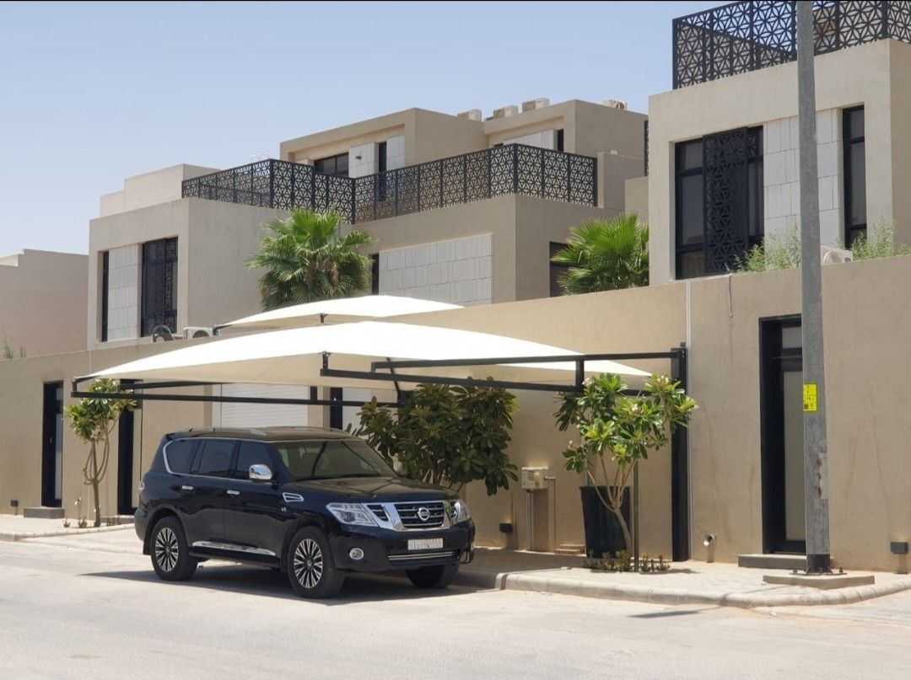
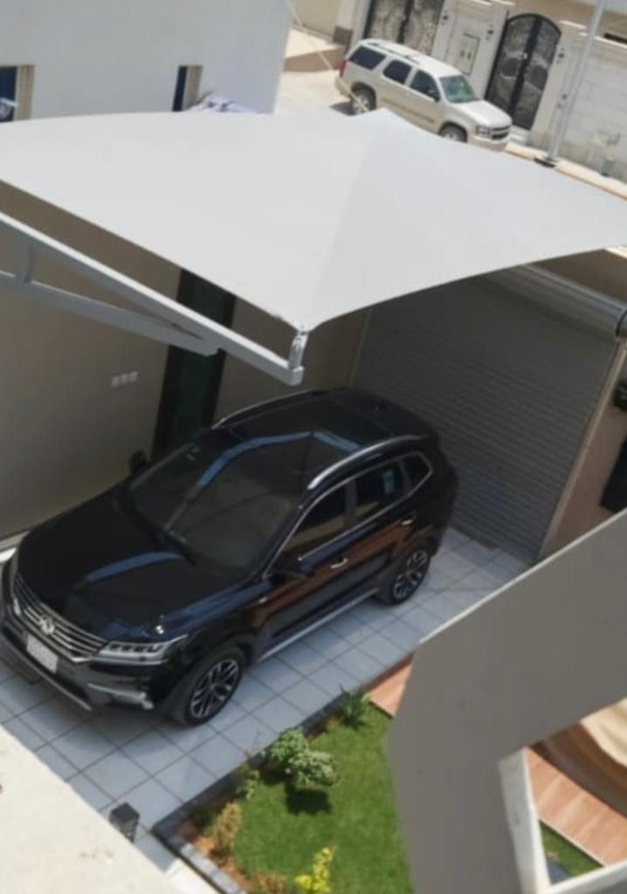

الصيانة الدورية للمظلات والسواتر هي الاستثمار الأذكى لإطالة عمرها وتوفير تكلفة الاستبدال الكامل. مظلتك التي بُنيت بمئات الريالات يمكن أن تعيش عشر سنوات إضافية بصيانة منتظمة تتكلف جزءاً بسيطاً من ذلك. نقدّم خدمة صيانة احترافية شاملة للمظلات والسواتر في المدينة المنورة وينبع — إصلاح الهيكل، استبدال الأقمشة، إعادة الطلاء، وتثبيت العناصر المفكوكة. اتصل الآن: 0559939118.

صيانة مظلة قماشية بيضاء في حي الروضة — المدينة المنورة
علامات تدل على أن مظلتك تحتاج صيانة
لا تنتظر حتى تتهالك مظلتك كلياً. هذه العلامات تُخبرك بأن الوقت قد حان للتدخل الفوري:
- تمزق أو شق في القماش، حتى لو كان صغيراً
- بهوت اللون وتغيّره من الأبيض أو الملوّن إلى لون داكن أو متقشر
- تسرّب المياه خلال موسم الأمطار رغم أن المظلة كانت عازلة سابقاً
- اهتزاز أو ميل ملحوظ في العمود أو الحامل الحديدي
- صدأ في الهيكل الحديدي أو تآكل في مناطق الوصل
- أصوات طقطقة أو اهتزاز شديد عند الرياح
- فك أو خروج مسامير التثبيت من الجدار أو الأرض
- تراكم الأتربة والأوساخ بشكل دائم لا تُزيله الأمطار
خدمات الصيانة التي نقدمها
فريقنا المتخصص يُقدّم حلولاً شاملة تُغطي كل جوانب صيانة المظلات والسواتر:
🧵 استبدال القماش
تغيير القماش القديم أو الممزق بقماش أكريليك أو PVC جديد بنفس القياسات الأصلية
🔧 تصليح الهيكل الحديدي
إصلاح الانحناءات وتعزيز نقاط الضعف وتبديل العناصر التالفة في الهيكل
🎨 إعادة الطلاء والدهان
تنظيف الصدأ وطلاء الهيكل بطلاء إيبوكسي مقاوم للعوامل الجوية
⚙️ إحكام التثبيت
إعادة تثبيت الأعمدة والبراغي وتقوية نقاط الربط بالجدار والأرض
كما نُقدّم خدمات إضافية تشمل: تنظيف القماش بالبخار، معالجة التشققات بالمواد العازلة، إضافة عناصر تدعيم للمظلات الكبيرة، وتركيب حواف مطرية لتحسين تصريف المياه.
كيف تُطيل عمر مظلتك؟ نصائح الصيانة الوقائية
الصيانة الوقائية أفضل من الإصلاح. اتبع هذه النصائح للحفاظ على مظلتك لأطول فترة ممكنة:
التنظيف الدوري كل ثلاثة أشهر
اغسل القماش بالماء والصابون اللطيف باستخدام فرشاة ناعمة، وتجنّب الضغط الشديد الذي قد يُوسّع الخيوط
الفحص البصري بعد كل عاصفة
تفقّد حالة التثبيت والقماش والهيكل بعد الرياح الشديدة وتصرّف فوراً عند أي علامة ضعف
رش مادة مقاومة للماء سنوياً
استخدم بخّاخ مقاوم للأشعة فوق البنفسجية والماء على القماش مرة سنوياً للحفاظ على خصائصه العازلة
طلاء الهيكل كل سنتين
أعِد طلاء الأجزاء الحديدية بطلاء مضاد للصدأ كل سنتين، مع إيلاء عناية خاصة لمناطق الوصل والمسامير
الفحص الاحترافي السنوي
احجز زيارة فحص سنوية مع فريقنا للكشف المبكر عن أي مشكلات قبل أن تتفاقم وتكلّف أكثر

مظلة قماشية رمادية بعد الصيانة والترميم الكامل — حي السلام، المدينة المنورة
صيانة السواتر
السواتر تتعرّض لنفس العوامل الجوية التي تؤثر على المظلات، وتحتاج صيانة منتظمة لضمان خصوصيتك واستمرار وظيفتها الجمالية والعملية.
إصلاح الشرائح التالفة
سواتر الألمنيوم والبلاستيك قد تتكسّر شرائحها أو تنحني عند الضغط الشديد. نستبدل الشرائح التالفة بشرائح مطابقة بنفس اللون والمقاس دون الحاجة لتغيير الساتر كاملاً، مما يوفّر عليك تكلفة كبيرة.
إعادة الطلاء والمعالجة السطحية
سواتر الحديد والألمنيوم تُعاد معالجتها بطلاء إيبوكسي أو بودرة كوتينج (Powder Coating) لاستعادة لونها الأصلي ومقاومتها للصدأ والأشعة الشمسية.
إحكام التثبيت والمسافة
مع الوقت، قد تتفكك مسامير التثبيت أو تتسع الفجوات بين الشرائح. نُعيد ضبط التثبيت وإحكام التباعد لضمان خصوصية كاملة وصمود أمام الرياح.
صيانة سواتر القماش
قماش السواتر يحتاج غسيلاً دورياً ومعالجة بالمواد المقاومة للعوامل الجوية، وعند تمزقه نستبدله بقماش جديد بنفس المواصفات واللون.
جدول أسعار الصيانة التقريبية 2026
| نوع الخدمة | السعر التقريبي |
|---|---|
| فحص وتقرير حالة المظلة | مجاناً |
| استبدال قماش مظلة سيارة (3×6م) | من 400 ريال |
| استبدال قماش مظلة حديقة (5×5م) | من 600 ريال |
| إعادة طلاء هيكل مظلة | من 250 ريال |
| تصليح وتقوية هيكل حديدي | من 200 ريال |
| إحكام تثبيت الأعمدة والبراغي | من 150 ريال |
| استبدال شرائح ساتر (متر طولي) | من 80 ريال |
| إعادة طلاء ساتر حديد (متر مربع) | من 60 ريال |
| صيانة شاملة للمظلة والساتر | حسب الحالة |
الأسعار تقريبية وتتفاوت بحسب حجم المظلة، نوع الخامة، ودرجة التلف. احصل على معاينة مجانية وعرض سعر دقيق بالاتصال على 0559939118.
اطلب صيانة مظلتك اليوم
معاينة مجانية وعرض سعر فوري — فريقنا يصل إليك في المدينة المنورة وينبع